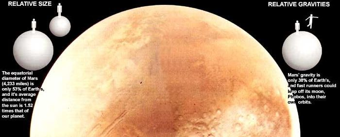
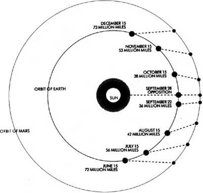
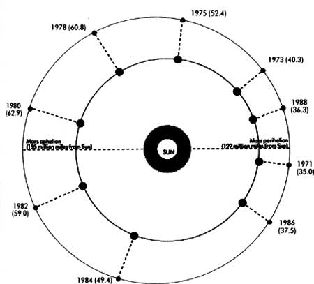
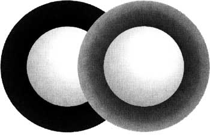
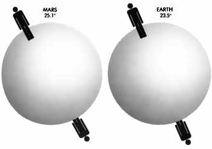
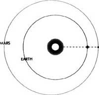
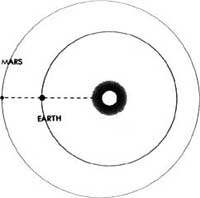
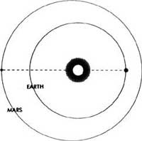

MARS HAS ALWAYS BOTH FASCINATED and frightened mankind. History shows that Babylonian priests and Roman soldiers were intrigued by Mars. More recently, public interest has been sparked by H. G. Wells, Ray Bradbury and Carl Sagan. And, in the not-too-distant future, American and Soviet space travelers may make Mars the first "fellow planet" our species has ever visited.
September 1988 provides the best opportunity in many years for a personal look at the planet. Not since 1971 has Mars been so close and bright, nor will it be again until 2003. And because our solar neighbor is far higher in the skies in 1988 than it was in 1971, this is the best time since 1954 for a telescopic look at the surface features of the red planet.
Of course, we can marvel at Mars even without a telescope. The three things that fascinated the ancients will still impress the naked-eye viewer of Mars today: the planet's color, its brightness and the tremendous way in which that brightness can increase.
How bright is Mars? At a close approach like the one this year, Mars greatly outshines all the stars. Jupiter, rising a few hours after Mars each night, is its only competition in the evening and midnight autumn sky. Mars reaches peak brilliance and outshines Jupiter in September and part of October, but then Jupiter, attaining its own maximum brightness in November, will take over and exceed Mars. But even when brighter, the almost imperceptibly yellow Jupiter is not nearly so striking as the more colorful red planet. Mars is certainly not stoplight red, but when it's very bright, its prominent deep orange hue does make the planet an imposing sight.
At Mars-rise, after 9:00 P.M. (daylight-saving time) as September begins, and after nightfall by late September and October, look due east. You'll see coming up the steady, unblinking stare of this ruddy planetary beacon that seemed to many ancient cultures to be stained with blood.
The Mesopotamians named it Nergal; the Egyptians, Red-Horus (the "planet smasher"); the Greeks, Ares; the Romans, Mars: all gods of war, destruction and blood. Even cultures which didn't necessarily connect the planet with war still alluded to its bloody hue in their name for it. The Chinese, for example, called Mars Huo Hsing, meaning "Fire Star."
But it was not just the color that alarmed superstitious peoples. They were equally awed by the way the planet changed tremendously in brightness over the course of a relatively few months or even weeks. In a year like 1988, Mars will increase its brightness roughly a hundredfold, and our ancestors viewed with dread such rare years of very close approach.
Perihelions and Aphelions
Why does Mars change its brightness so much more than other planets? Why do we get its closest approach and by-far-greatest display just once every 15 or 17 years? The answers lie in the planet's orbit.
The important orbital position in which Earth draws even with Mars-with Earth between Mars and the Sun-is called "opposition," because at that point Mars appears opposite the Sun in our sky. In other words, when in opposition Mars rises at sunset, is highest at midnight and doesn't set until sunrise. If you look at Fig. 1, you'll see that it's also around the time of opposition that Mars is closest to us and therefore brightest. This explains why Mars appears brighter and more prominent only about every two years, since it comes to opposition that often.
The reason Mars sometimes gets enor mously brighter at opposition (rather than just somewhat brighter like other outer planets) is that its distance from Earth varies by such a large percentage. Jupiter's distance from us varies by less than 5010, while Mars' distance can vary by about 710%! With Mars on the far side of the Sun from us, the Earth-to-Mars gulf is roughly 250 million miles; at the best opposition that distance to Mars can be as little as 35 million.
And now we come to the most interesting part of all. Why do some oppositions of Mars bring the planet so much closer, making it appear so much brighter, than others? Why is there a kind of super opposition of Mars about every 15 or 17 years (1954,1971,1988, 2003, for example)? This phenomenon is due to Mars' lopsided orbit. Its perihelion (point closest to the Sun) is about 129 million miles from the Sun, while its aphelion (point farthest from the Sun) is 155 million. Consequently, if Earth passes Mars when the latter is near aphelion, the separation between the two worlds is approximately 63 million miles, but if Earth passes Mars when the latter is near perihelion, the separation can be as small as 35 million miles.
In an "aphelic opposition" like that of 1980, Mars' brightness only rivals that of the very brightest star; at a "perihelic opposition" like that of 1988, the planet far outshines the brightest star. And telescopic views of Mars in these two oppositions reveal a dramatic difference in the clarity of the planet's features.
A Closer Look
It was the invention of the telescope that made Mars by far the most interesting of our fellow planets. By the time of Mars' perihelic oppositions of 1877 and 1892, telescopes were advanced enough to show that Mars was similar to Earth-perhaps even similar enough to support some kind of life.
The planet's rotation period (its "day") and its amount of axis tilt (which causes seasons) were found to be almost the same as Earth's. Each pole of Mars had a whitish patch that dwindled in summer and grew in winter-surely some kind of ice caps like Earth's. There were green regions, too.
You can see such features yourself if you have access to a telescope this fall. One with a 60mm (less than 2'h-inch-diameter) main lens or mirror is a bit small for serious Mars observing, even with Mars at its closest. But if the atmosphere is calm (little star-twinkling) and Mars is fairly high (overhead, rather than close to the horizon), a good telescope of this size could show you one of the white polar caps, and probably a few of the green areas, and most likely the roughly triangular Syrtis Major region. However, the green patches might look merely gray with such a small telescope. If, on the other hand, you have a six- or eight-inch telescope, there may be some nights this fall when up to several dozen of the greenish features should be visible in moments of especially good "seeing" (a very calm atmosphere).
The late-nineteenth-century observers were fascinated with the green regions; because these areas seemed to spread as the Martian spring progressed and the ice caps melted, it was thought perhaps they were oceans or were wet areas with vegetation.
A great turning point came with the fine perihelic opposition of 1877. The Italian astronomer Giovanni Schiaparelli thought that in moments of best "seeing'," he was detecting thin, linear features running between various green regions on Mars. Assuming that the green areas might be seas, he called these lines canali, Italian for "channels," or natural bodies of water connecting supposed seas. Unfortunately, the translation into English is usually "canals," a word which implies manufactured waterways.
In America, the wealthy, aristocratic Percival Lowell was excited by the idea of Martian canals and funded the building of Lowell Observatory near Flagstaff, Arizona, to search for them. Not all observers saw the features, but Lowell, in the fine climate of Arizona, did, and his imagination ran wild. He speculated that Mars was drying up and dying and that the Martians-perhaps a race much older than humans-had built the canals in a last effort to save themselves.
Lowell influenced half a century of science-fiction writers and an impressionable public. Edgar Rice Burroughs, the creator of Tarzan, wrote about John Carter of Virginia adventuring on Mars to win the hand of the Martian princess Dejah Thoris. Ray Bradbury gave us his rich and often poignant Martian Chronicles.
"Little green men from Mars" became a famous jest. But many people weren't laughing on the night before Halloween in 1938, when Orson Welles' radio dramatization of H. G. Wells' War of the Worlds panicked many folks into believing the Martians really were invading. At the time, Mars was inconspicuous; this October 30th, the 50th anniversary of that night, will be celebrated with the red planet burning ominously bright in our sky.
Pink Skies, Blue Sunsets
As we look in awe at Mars with naked eyes or telescopes this autumn, two final questions further inflame our sense of wonder: Is there life on Mars, and-whether or not there is-when will men and women of Planet Earth visit this world?
The two Viking spacecraft that America sent had landers which set down on the red planet in 1976 to try to determine if there was life there. The results were inconclusive and not encouraging.
But the possibility of life on Mars is not yet ruled out. We now know that in the distant past, perhaps repeatedly, Mars has gone through periods when its environment was far less hostile. The Viking orbiters found the traces of ancient riverbeds and mighty floods -perhaps even onetime ocean shores on the now terribly dry planet. There's still some water-perhaps much below the surface on Mars.
And the Viking spacecrafts showed other things about Mars so beautiful and exciting as to stagger belief. Mars is a planet of pink skies and blue sunsets. It has volcanoes almost three times taller than Mt. Everest and as wide as Missouri, as well as an often windswept and sometimes mist-filled canyon as long as the whole United States. There are awesome planet-wide dust storms, four-mile-tall dust devils, beautiful frosts, incredible clouds and two close, tiny, lumpy, hurtling moons called Phobos and Deimos.
If all went well with a launch last July, Phobos may soon be visited by an Earth probe. The Soviet Phobos spacecraft should be on its way even as you read these words.
When it arrives next spring, the vehicle (unmanned, of course) will perform some unique experiments, including landing a device which will bounce around Phobos. (The little moon's gravity is so slight that a person running fairly fast could actually take off and escape from Phobos into his or her own orbit around Mars!)
Other plans for truly grand Mars missions lie further ahead. The U. S. and U. S. S. R. have some very ambitious unmanned missions on the drawing board for the 1990s. And looming in the more distant future perhaps only 10 to 20 years away-is the mission that some scientists believe could help bring the nations of our world together as nothing else ever has: the first manned flight to Mars.
Could this planet named for the god of war help bring peace to our world? That's the biggest dream of all to consider as we watch the beacon of fire called Mars in our sky this autumn.
MARS
The planet takes its name from the Roman god of war and blood
THE ROTATION OF EARTH AND MARS
Despite their big difference in size, the 24-hour rotation periods (or "days") for Earth and MArs are about the sane. A day on Mars is slightly longer than here.
FIGURE 1
FIGURES 1 AND 2
Figure 1 demonstrates that Mars will be in opposition (visible all night long) September 27-28, 1998.
In Figure 2, th enumbers in parenthesis note the distances between Mars and Earth in millions of miles. Mars will be closest to Earth (36.3 million miles) on the night of september 21-22, 1998.
FIGURE 2
ATMOSPHERE DENSITY
The "air" on Mars is about 10 times thinner than that on Earth and is composed almost entirely of carbon dioxide. Temperatures generally range from -120°F nighttime lows to -20°F daytime highs.
RELATIVE TILT
Mars' axis tilt (which causes the change of seasons) is 25.1°; Earth's is similar at 23.5°
ORBITS EXPLAINED
Though Earth and Mars often draw even with each other, the three diagrams above explain why our closest solar neighbor sometimes appears so much bigger and brighter to earth observers.
|
|
 |
|
|
|
|
 |
|
 |
 |
 |
|
 |
 |
 |